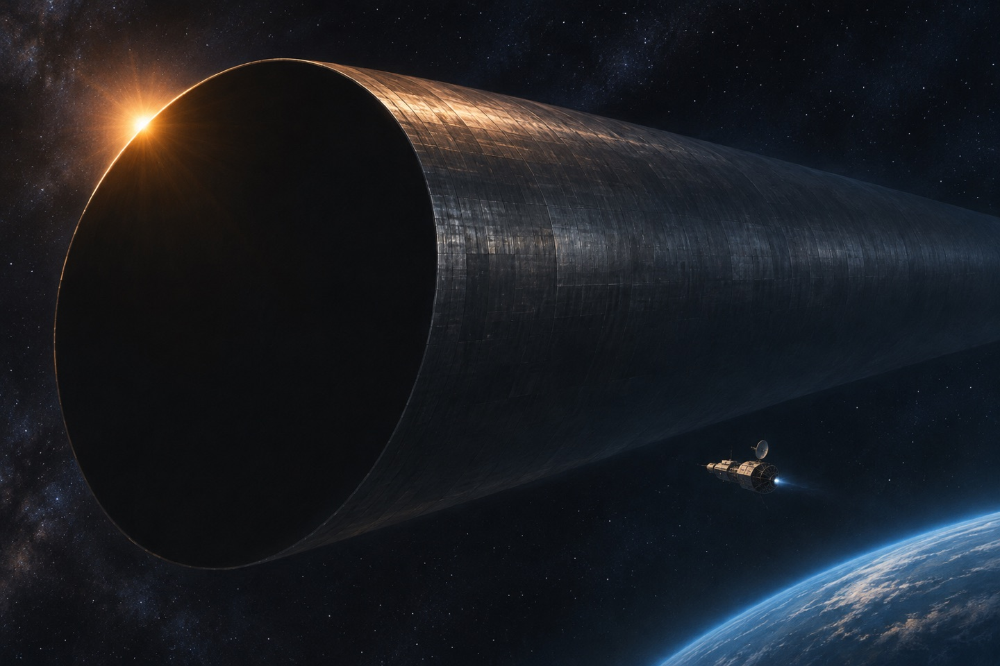
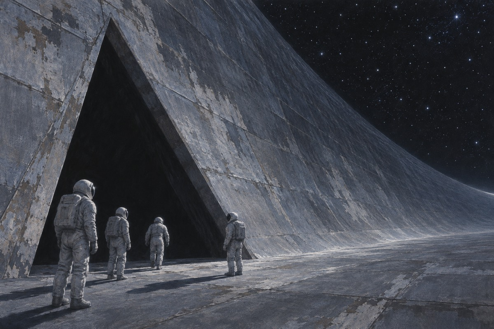
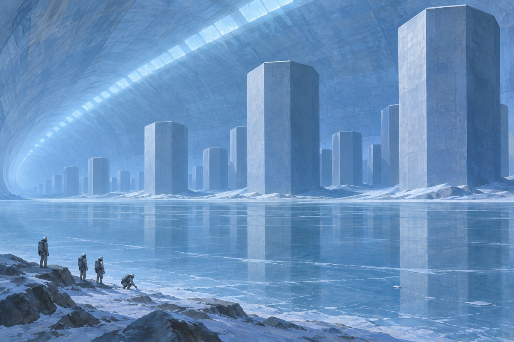
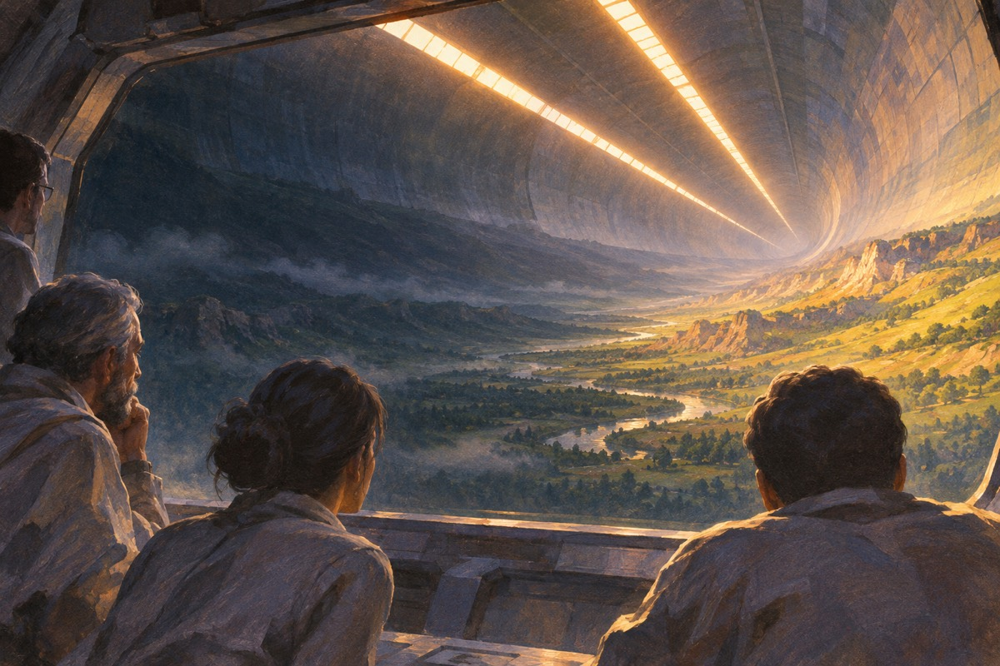
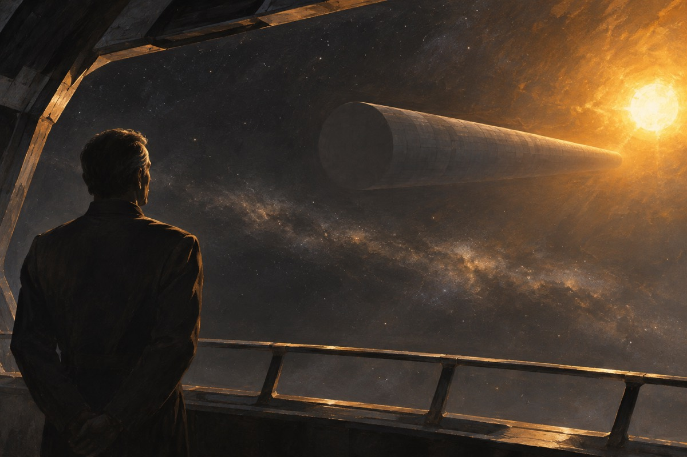

拉玛
2130 年，一个物体从外太空飞进太阳系。它很长，圆柱形，转得很快。天文学家给它取名拉玛。有人说它是小行星，有人说它是飞船。人类派了一艘飞船去追，叫「奋进号」。指挥官叫比尔·诺顿。他说：我们是去欢迎它，还是去看着它。总部说：两件事都做。他说：那就得看它欢不欢迎我们。新闻里说：它可能是礼物，也可能是炸弹。诺顿说：这两个词，是我们唯一会用的两个词。

接近
奋进号追上拉玛，绕着它飞。它的表面是灰的，像一块旧石头，没有窗，没有门，没有任何标记。有人失望，有人松一口气。诺顿说：我们绕了三圈，什么也没找到。他们算了一下，它的自转产生重力，赤道附近有零点六克。它里面一定是空的。一个空的东西，为什么要转。吉米说：它的表面比月球还老。诺顿说：可它还在转。他说：一个死东西不会转。诺顿说：把所有的数据都记下来。他说：我们可能只有这一次机会。
开门
在南极，他们发现三条槽，拼成一个三角形。一个叫吉米·帕克的年轻人说：这是螺丝。他们用激光切开，三角板慢慢松开，露出一个洞。洞下面是黑的，深得看不见底。有人说：我们进去吗。诺顿说：我们来了就是为了进去。他说：第一批人，自愿。全船的人都举手了。三角板松开的时候，没有声音。他们站在那个洞边上，闻见一股很淡的味道，像是铁锈。他们打了一盏灯进去，光在洞里照出去，照不到底。有人数了三下，说：走了。
出处 · 第 8 章 南极

平原
他们进去以后，看见一片平原，两头是巨大的圆柱形墙壁，一直向上延伸，最后合成一条线。那條线上有一道光带，把整个内部照亮。他们站在那儿，谁也没有说话。有人小声说：这是一个人造的世界。诺顿说：这是一个人造的世界。他说：我们得重新想一遍所有的事。平原上有风。他们后来才知道，那是空气在对流。风里有水汽，有温度，有味道。诺顿说：我们站着的地方，在五十公里外的人看来，是天。他说完，大家抬头看了看。
冰湖
平原中间有一个冰湖，湖对面有一座城市，叫「纽约」。城市是空的，没有窗，没有门，只有一些塔和沟。他们走过去，站在那些建筑前面，觉得自己很小。吉米说：这里有人住过吗。诺顿说：没有。他说：这些东西是新的。他说：它们等着什么。城市的塔是八面体，没有窗。他们绕着走了一圈，找到的只有墙。吉米说：这不是给人住的。他们给那座城市取名纽约，因为它也是那么高，那么挤，那么空。

生物机器人
他们看见一些三条腿的东西，在走路，在扫地，在搬东西。它们不长眼睛，也不看人。有人叫它们「生物机器人」。它们不攻击人，也不理人。一个队员伸手去碰，被推开了。他回来说：它们有劲。诺顿说：那就别碰。他说：我们是客人。那些东西走路的时候，三条腿轮流落地，很稳。它们身上有一种金属的光，可不反光。有个队员说：它们在干活。诺顿说：它们在为谁干活。没有人回答。
冰
湖面结着冰。他们打了一块冰上来，化开，发现是水。有人说：如果全是水，那够一个城市用一百年。诺顿说：它带这么多水做什么。没有人回答。他们在湖边站了很久。灯带的光在冰上反射，一片一片，像有人在里面点灯。冰面上有一层薄霜。他们的脚印留在上面，很久没有消失。有人在上面写了自己的名字。冰里冻着一些气泡。他们把气泡打开，里面的气跟地球的空气差不多。
日出
拉玛内部有白天和黑夜。灯带会暗下去，然后从一头亮起来，慢慢移到另一头。第一次「日出」的时候，全船的人都跑到窗口看。有人说：这像家。诺顿说：一个机器为什么要做白天黑夜。他说：除非它想养什么东西。他说完，自己打了个寒战。灯带亮起来的时候，全船的人都停下了手里的事。有人说：这是早上。他说：这是一个人造的早上。有人说：我们是不是该睡觉了。诺顿说：按拉玛的时间睡。他说：我们现在住在别人的钟里。

打开
有一天，城市的墙开了。不是被打开的，是自己裂开的。里面是空的。那些生物机器人开始往里搬东西。诺顿说：它们在准备。他说：准备什么。他们拍了很多照片，发回地球。地球上的人吵成一片：有人说这是礼物，有人说这是武器。诺顿说：我们连它是什么都不知道，就已经在分了。墙裂开的时候，里面是黑的。生物机器人搬进去的东西，他们一样也不认识。那些生物机器人搬的东西，有方的，有圆的，有像水的。没有人敢碰。
冰化了
灯带变亮，温度升高。冰湖化了一半。湖里开始出现东西：一些细长的、会游的东西。他们捞了一个上来，发现是一种像鱼又不像鱼的生物。生物学家说：它有器官，可它不呼吸。他说：它不吃东西。他说：它好像只是在动。诺顿说：那它活着吗。湖里游的东西很细，像针。它们成群地转圈，转了很久，然后散了。那些针一样的东西围着灯转，转了很久。生物学家说：它们在找什么。他说：也许在找我们。
拉玛人
他们终于看见了一个「拉玛人」：一个像海星一样的生物，会走，会看，会用手势。它对人没有兴趣。它在平原上待了几天，然后死在一座桥边。他们把它抬回去，解剖。它身上没有嘴，没有胃。它可能是被造出来的，也可能只是这个飞船的一件工具。诺顿说：我们连它是不是活的都说不清。那个海星死的时候，身体慢慢变硬，最后像一块石头。他们把它放进箱子里，箱子上写着：样本一号。
水星人
地球上的政治乱成一团。水星共和国说：拉玛对我们的太阳有威胁，我们要炸掉它。地球说：不行。水星说：那就我们自己来。他们发射了一枚导弹。诺顿收到通知，说有一枚导弹在飞。他说：你们要炸一个我们还没看懂的东西。总部说：这不是我们的决定。他说：那是谁的决定。总部说：没有人。水星的代表在会议上说：我们不能等。地球的代表说：你们不能炸。他说：那我们自己炸。
水星方面发出最后通牒
水星方面担心拉玛对内太阳系构成威胁，派出核武器并要求诺顿的飞船撤离。诺顿继续设法保住这次接触的机会，令通信官鲍里斯·罗德里戈前往处理武器。
出处 · 《与拉玛相会》末段 · 水星通牒与登上武器
罗德里戈让武器失效
罗德里戈抵达水星发射的武器，利用远距离通信的延迟解除威胁。拉玛继续向太阳飞行，借这次近距离接近太阳的机会改变航行状态，最终离开太阳系。
出处 · 《与拉玛相会》末段 · 水星武器及拉玛离去

拉玛习惯以三个为一组
拉玛离开以后，地球方面仍无法确认这艘飞船建造者的去处和目的。小说结尾让拉玛委员会的一名成员意识到，拉玛处处反复出现三分结构。这一规律留下了还会有下一次接触的可能。
出处 · 《与拉玛相会》末章